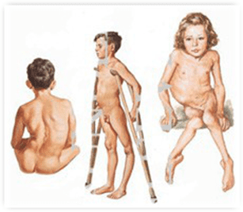

Мощное название главы, правда? Нет, это не ошибка. К сожалению, живая вакцина против полиомиелита иногда (крайне редко) вызывает полиомиелит, он так и называется – вакциноассоциированный паралитический полиомиелит (ВАПП).
И даже, как пишет ВОЗ в своей последней позиции по полиомиелиту, «случаи ВАПП клинически неотличимы от полиомиелита, вызванного диким полиовирусом».Это происходит очень редко, и обычно только когда вакцинацию начинают сразу с живой прививки: ВОЗ дает цифру 1 случай на 2,7 миллиона впервые привитых.

Для сравнения: риск рождения ребенка с синдромом Дауна 1:800 живорожденных, то есть на три порядка (!) выше, чем риск ВАПП у привитых детей. Риск погибнуть в ДТП по дороге в поликлинику тоже на пару порядков выше, полагаю (точной статистики трудно добиться), и т. д. То есть даже если просто игнорировать все предостережения, скорее всего ничего не случится.
Глобальный отказ от ОПВ давно стоит в планах ВОЗ, так как вакцинные вирусы, выделяемые с калом, потенциально поддерживают циркуляцию полиовирусов в природе, могут мутировать в вакциннородственные штаммы и даже провоцировать вспышки (как это было недавно на Украине), ну и из-за риска ВАПП тоже. Тем не менее вакцинация живой полиовакциной более эффективна, более физиологична и более дешева, чем ИПВ, поэтому переход на ИПВ возможен только при очень спокойной эпидобстановке по полиомиелиту. Россия (как и многие другие страны) не может пока этим похвастаться и отказаться от ОПВ пока не готова.
Тем не менее Россия предприняла все необходимые шаги, чтобы не допустить ВАПП у своих граждан, даже немного перестаралась, сделав правила профилактики слишком жесткими.
Однако как бы ни был мал риск, у кого-то это все же случается, верно? И если этот фактор риска управляемый (его вероятность можно снижать), то и нужно управлять/снижать. Именно поэтому уже много лет в РФ (и в других странах) вакцинацию начинают с инактивированной полиовакцины (ИПВ), а в некоторых странах даже полностью отказались от оральной полиовакцины (ОПВ).
Вот эта запутанная ситуация и рождает много сумятицы, как среди антипрививочно настроенных людей (они боятся, что сама прививка может вызвать полиомиелит с большей вероятностью, чем даже дикий вирус; поэтому в принципе боятся живой полиовакцины), так и среди пропрививочно настроенных (они боятся что из-за лишних ограничений вакцинации часть детей будет недопривита, поэтому в принципе отрицают необходимость разобщения привитых и непривитых детей). И то и другое – суть крайности.